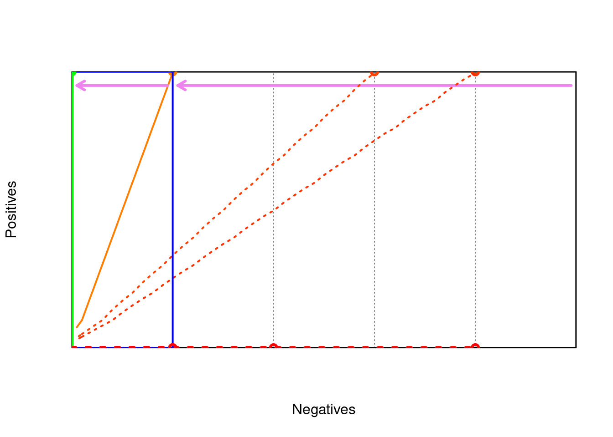

Code
c <- 1
pos <- c*50
neg <- 50
rocgrid <- function() {
plot( c(0,neg), c(0,pos),
xlim=c(0,neg),ylim=c(0,pos),
xaxs = "i",yaxs = "i",
xaxt = 'n', yaxt = 'n',
type = "n",
xlab = "Negatives", ylab = "Positives")
grid (nx = neg/10, ny = pos/10, col = gray(0.5))
}
box <- function(x0,y0,x1,y1,col) {
lines(c(x0,x0,x1,x1,x0),c(y0,y1,y1,y0,y0),col=col,lty=1,lwd=2)}
metric <- function(tp,fp,Pos,Neg,m) {
if (tp+fp == 0) { return(0) }
else {
#Pos = pos
#Neg = neg
N = Pos+Neg
TP = tp
FP = fp
FN = Pos-TP
TN = Neg-FP
if (m=='accuracy') return( (TP+TN)/N )
if (m=='wracc') return( TP/N - (TP+FP)*(TP+FN)/N^2 )
if (m=='confirmation') return( ((TP+FP)*(FP+TN)/N^2 - FP/N)/(sqrt((TP+FP)*(FP+TN)/N^2) - (TP+FP)*(FP+TN)/N^2) )
if (m=='generality') return( (TP+FP)/N )
if (m=='precision') return( TP/(TP+FP) )
if (m=='laplace-precision') return( (TP+10)/(TP+FP+20) )
if (m=='f-measure') return( 2*TP/(2*TP+FP+FN) )
if (m=='g-measure') return( TP/(FP+Pos) )
if (m=='precision*recall') return( TP^2/((TP+FP)*(TP+FN)) )
if (m=='avg-precision-recall') return( TP/(2*(TP+FP)) + TP/(2*(TP+FN)) )
if (m=='aucsplit') return( (TP*Neg+Pos*TN)/(2*Pos*Neg) )
if (m=='balanced-aucsplit') return( TP/Pos - FP/Neg )
if (m=='chi2') return( (TP*TN - FP*FN)^2 / ((TP+FP)*(TP+FN)*(FP+TN)*(FN+TN)) )
if (m=='info-gain') return( entropy(Pos,Neg) - (TP+FP)/N*entropy(TP,FP) - (FN+TN)/N*entropy(FN,TN) )
if (m=='gini') return( gini(Pos,Neg) - (TP+FP)/N*gini(TP,FP) - (FN+TN)/N*gini(FN,TN) )
if (m=='dkm') return( dkm(Pos,Neg) - (TP+FP)/N*dkm(TP,FP) - (FN+TN)/N*dkm(FN,TN) )
if (m=='entropy') return( entropy(TP,FP)/2 )
if (m=='giniimp') return( gini(TP,FP) )
if (m=='dkmimp') return( dkm(TP,FP) )
if (m=='minacc') return( minacc(TP,FP) )
}
}
entropy <- function(P,N) {
p <- P/(P+N)
n <- N/(P+N)
if (P==0 || N==0) { return( 0 ) }
else { return( -p*log2(p) -n*log2(n) ) }
}
gini <- function(P,N) {
p <- P/(P+N)
n <- N/(P+N)
return( 4*p*n )
}
dkm <- function(P,N) {
p <- P/(P+N)
n <- N/(P+N)
return( 2*sqrt(p*n) )
}
minacc <- function(P,N) {
p <- P/(P+N)
n <- N/(P+N)
return( min(p,n) )
}
save = FALSE
if (save==FALSE) {colour1="red"; colour2="blue"} else {colour1="black"; colour2="black"}
contours <- function(m,label) {
x <- seq(0,neg)
y <- seq(0,pos)
z <- matrix(nrow=neg+1,ncol=pos+1)
for (i in x) {
for (j in y) {
z[i+1,j+1] = metric(j,i,pos,neg,m)
}
}
contour(x,y,z,nlevels=10,add=TRUE,col=colour1,lty="solid",method=label)
}
contour1 <- function(m,col,lty,tp,fp,Pos,Neg) {
#v <- metric(tp,fp*(Pos/Neg),Pos,Neg,m)
v <- metric(tp,fp,Pos,Neg,m)
col=rgb(min(2-2*v,1),v,0)
points(fp,tp,col=col,type='p',lwd=3)
if (tp==0 || fp==0) {
lines(c(0,fp),c(0,tp),col=col,lty=lty,lwd=4)
return()
}
Pos <- tp
Neg <- fp
x <- seq(0,Neg)
y <- seq(0,Pos)
z <- matrix(nrow=Neg+1,ncol=Pos+1)
for (i in x) {
for (j in y) {
z[i+1,j+1] = metric(j,i,Pos,Neg,m)
}
}
v <- metric(tp,fp,Pos,Neg,m)
contour(x,y,z,level=v,add=TRUE,col=col,lty=lty,labels="",lwd=2)
}
pos=10; neg=50;
rocgrid()
d = 0.5
method = 'precision'
colour = 'black'
box(0,0,neg,pos,colour)
p = 10; n = 10
arrows(neg-d,pos-d,n+d,p-d,col='violet',length=0.1,lwd=3)
contour1(method,'orange','solid', p, n, pos, neg)
contour1(method,colour,'dotted',10, 30, pos, neg)
contour1(method,colour,'dotted', 0, 40, pos, neg)NULLCode
contour1(method,colour,'dotted', 0, 20, pos, neg)NULLCode
contour1(method,colour,'dotted',10, 40, pos, neg)
contour1(method,colour,'dotted', 0, 10, pos, neg)NULLCode
colour = 'blue'
box(0,0,n,p,colour)
p1 = 10; n1 = 00
arrows(n-d,p-d,n1+d,p1-d,col='violet',length=0.1,lwd=3)
contour1(method,'green','solid', p1, n1, p, n)NULLCode
contour1(method,colour,'dotted', 0, 10, p, n)
NULL